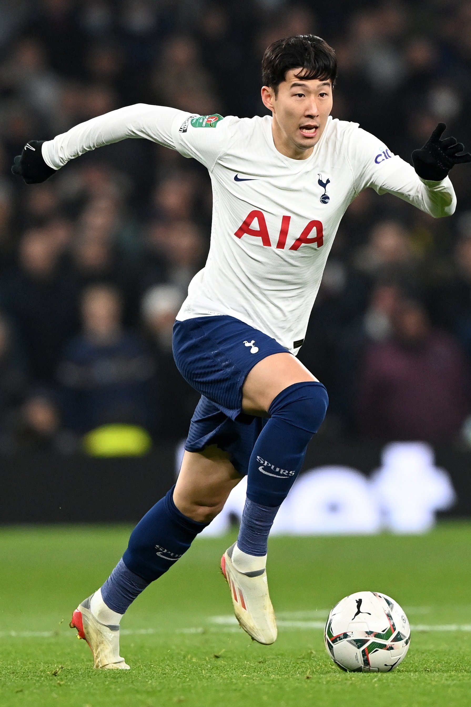

Son Heung-min (Korean: 손흥민 /ˈsɒn ˈhʊŋ.mɪn/; born 8 July 1992) is a South Korean professional footballer who plays as a forward for Premier League club Tottenham Hotspur and captains the South Korea national team.Considered one of the greatest Asian footballers of all time, Son was the first Asian player to score more than 50 goals in the Premier League.[9][10][11][12][13]

Born in Chuncheon, Gangwon Province, Son relocated to Germany to join Hamburger SV at age 16, for which he made his debut in the German Bundesliga in 2010. In 2013, he moved to Bayer Leverkusen for a club record €10 million before signing for Tottenham for £22 million two years later, becoming the most expensive Asian player in history.[14] While at Tottenham, Son became the top Asian goalscorer in both Premier League and Champions League history,[15] and surpassed Cha Bum-kun's record for most goals scored by a Korean player in European competition.[16][17][18] In 2019, he became the second Asian in history to reach and start a UEFA Champions League final after fellow countryman Park Ji-sung.